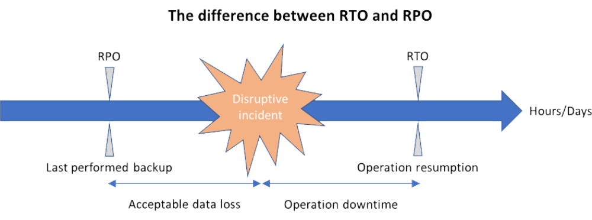

SCC
Brasil
os cloud gurus
Software Cloud Consulting
Your software development, cloud, consulting & shoring company
RTO and RPO targets in a cloud environment
By Daniel Nascimento
RTO and RPO
RTO and RPO are normally associated with Disaster Recovery, and Business Continuity Plan,
these RTO and RPO targets set the time frame that a business can support after a outage,
as companies rely more in applications to keep support, sales and production running,
this matter become a serious one, saving or costing companies reputation and money.
With that being said, the majority of business cases are not critical, and don't need a super tight recovery time,
so is in the hands of it managers together with business owners,
to set RTO and RPO for each business application evaluating the time frame that a company can tolerate in
case of a disaster and the cost associated with it.

As a quick refresher:
RTO stands for Recovery Time Objective and is a measure of how quickly after an outage an application must be available again.
RPO stands for Recovery Point Objective, which refers to how much data loss your application can tolerate. (How old can be the data when the application in recovered)
Normally RTO is associated with, how much time your business can support of downtime, and in the technical part,
how much time your team/systems need to setup/recreate a new application environment, and RPO is associated with
how much data loss your application can support, normally this refers to the most recent backup
As you can see, probably each application in your organization has an ideal RTO and RPO, but in reality,
managers usually group these applications in Tiers, Tier(0,1,2 etc... ), with tier 0 having the lowest RTO.
The analysis can begin with the Tier-0 (lowest RTO)
Tier-0
In traditional on-premises data centers, this includes network equipment like switches, routers, also firewalls, domain servers, hypervisors these form the base for the applications recovery process.
In Cloud environments this Tier-0 is the responsibility of your Cloud provider, in case of AWS you can leverage multi-az and multi-region deployment, to improve on this Tier-0 achieving almost 0 RTO.
Tier-1,2 ...
Here you can start work with the business owners to find the sweet spot for RTO and RPO for each application, and group your applications with similar RTO and RPO Targets, some of the main questions to ask when defining the RTO/RPO are related to financial cost, reputation cost, regulatory or compliance requirements, customer SLA(Service Level Agreements) and how the data loss impact the application.
Must be a balance in the RTO and RPO targets, observing that when RTO is reduced, usually cost and complexity increase, in cloud and on-premises environments. With that in mind, we could ask, "how many times AWS suffers an outage? and where?", until now (june 2023), AWS has registered 15 events since 2011, the summary of the events can be found here.
AWS Options
AWS provides multi-az and multi-region features and strategies in several services(EC2, S3, RDS), and the Elastic Disaster Recovery service that can improve your RTO and RPO even for on-premises environments, these can be used to mitigate the risk without much effort/cost.
Also AWS offers more help with defining the RTO and RPO targets using AWS Resilience Hub. Contact us to know more about how to set the RTO and RPO for your applications running on AWS and which options AWS offers in the services that you use to improve your IT business continuity plan.
Autor

Daniel do Nascimento
Cloud Developer
3 x AWS Certified